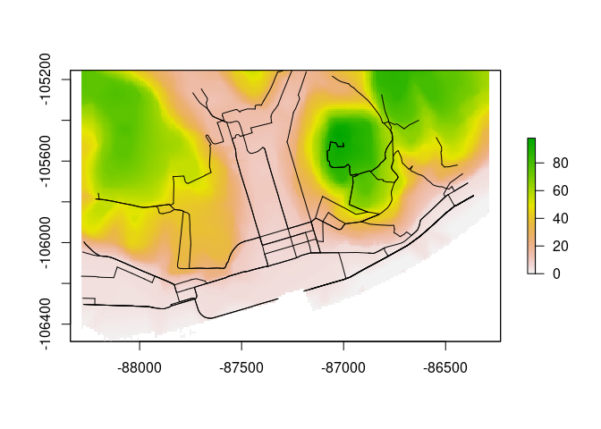
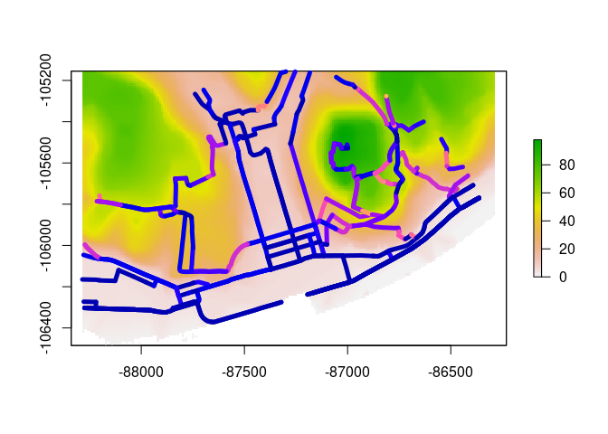

The goal of slopes is to enable rapid and accurate calculation slope steepness of linear features such as roads, based on commonly available input datasets such as road geometries and digital elevation model (DEM) datasets.
Installation
Install the development version from GitHub with:
# install.packages("devtools") devtools::install_github("itsleeds/slopes")
Usage
Load the package in the usual way:
library(slopes)
The minimum data requirements for using the package are elevation points, either as a vector, a matrix or as a digital elevation model (DEM) encoded as a raster dataset. Typically you will also have a geographic object representing the roads or similar features. These two types of input data are represented in the code output and plot below.
# A raster dataset included in the package: class(dem_lisbon_raster) # digital elevation model #> [1] "RasterLayer" #> attr(,"package") #> [1] "raster" summary(raster::values(dem_lisbon_raster)) # heights range from 0 to ~100m #> Min. 1st Qu. Median Mean 3rd Qu. Max. NA's #> 0.000 8.598 30.233 33.733 55.691 97.906 4241 raster::plot(dem_lisbon_raster) # A vector dataset included in the package: class(lisbon_road_segments) #> [1] "sf" "tbl_df" "tbl" "data.frame" plot(sf::st_geometry(lisbon_road_segments), add = TRUE)

Calculate the average gradient of each road segment as follows:
lisbon_road_segments$slope = slope_raster(lisbon_road_segments, e = dem_lisbon_raster) summary(lisbon_road_segments$slope) #> Min. 1st Qu. Median Mean 3rd Qu. Max. #> 0.00000 0.01246 0.03534 0.05462 0.08251 0.27583
This created a new column, slope that represents the average, distance weighted slope associated with each road segment. The units represent the percentage incline, that is the change in elevation divided by distance. The summary of the result tells us that the average gradient of slopes in the example data is just over 5%. This result is equivalent to that returned by ESRI’s Slope_3d() in the 3D Analyst extension, with a correlation between the ArcMap implementation and our implementation of more than 0.95 on our test datast (we find higher correlations on larger datasets):
cor( lisbon_road_segments$slope, # slopes calculates by the slopes package lisbon_road_segments$Avg_Slope # slopes calculated by ArcMap's 3D Analyst extension ) #> [1] 0.9770436
We can now visualise the slopes calculated by the slopes package as follows:

Performance
A benchmark can reveal how many route gradients can be calculated per second:
e = dem_lisbon_raster r = lisbon_road_segments[1:100, ] res = bench::mark(check = FALSE, raster_bilinear = {slope_raster(r, e)}, raster_simple = {slope_raster(r, e, method = "simple")} ) # ?bench::mark res #> # A tibble: 2 x 6 #> expression min median `itr/sec` mem_alloc `gc/sec` #> <bch:expr> <bch:tm> <bch:tm> <dbl> <bch:byt> <dbl> #> 1 raster_bilinear 12.12ms 12.93ms 77.8 7.73MB 21.5 #> 2 raster_simple 6.49ms 6.78ms 146. 5.68MB 25.6
That is approximately
round(res$`itr/sec` * 100) #> [1] 7779 14570
routes per second using bilinear (the default) and ‘simple’ methods to extract elevation estimates from the raster datasets.
That is sufficient for our needs but we plan to speed-up the calculation, e.g. using the new terra package, as outlined this thread.